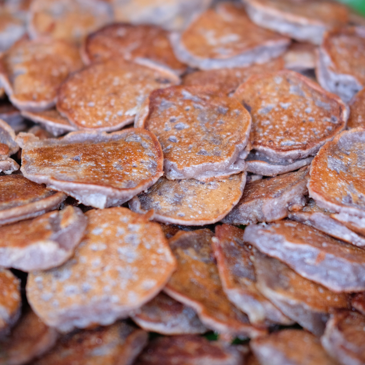

บ้าบิ่น

ส่วนผสม
⋆ แป้งข้าวเหนียวขาว 315 กรัม
⋆ แป้งข้าวเหนียวดำ 60 กรัม
⋆ น้ำตาลทรายไม่ฟอกสี 220 กรัม
⋆ เกลือป่น 1/2 ช้อนโต๊ะ
⋆ ไข่ไก่เบอร์ 2 1 ฟอง
⋆ น้ำเปล่า 200 มิลลิลิตร
⋆ หัวกะทิ 250 มิลลิลิตร
⋆ ผงฟู 3/4 ช้อนชา
⋆ มะพร้าวขูดขาว 375 กรัม
⋆ เนื้อมะพร้าวอ่อน 375 กรัม
วิธีทำ
1) นำแป้งทั้ง 2 ชนิดใส่ลงในชามผสม
2) ใส่น้ำตาลทรายไม่ฟอกสี เกลือป่น ไข่ไก่ น้ำเปล่า
แล้วใช้มือคลุกเคล้าให้ส่วนผสมเข้ากัน ประมาณ 5 นาที
3) นวดส่วนผสมจนน้ำตาลทรายละลายหมด ใส่กะทิ ผงฟู และมะพร้าวขูดลงไป
4) ขยำให้กะทิในเนื้อมะพร้าวออกมา จากนั้นใส่เนื้อมะพร้าวอ่อนลงไป
5) นำแป้งขนมไปแช่ตู้เย็นประมาณ 1-2 ชั่วโมง
แล้วคลุกเคล้าให้เข้ากัน
6) ตั้งกระทะ ใส่น้ำมันพืชนิดหน่อย ใช้ไฟอ่อน พอกระทะร้อนให้ใส่แป้งลงไป
7) เกลี่ยให้แป้งมีความหนาที่เสมอกัน ปิดฝาแล้วรอจนขนมเริ่มส่งกลิ่นหอม
ให้เปิดฝาขนมแล้วกลับด้าน
8) กลับด้านขนมแล้วจากนั้นให้ปิดฝาแล้วรอให้ขนมอีกด้านนึงสุกดี
พลิกจนให้ขนมเกรียมตามต้องการ